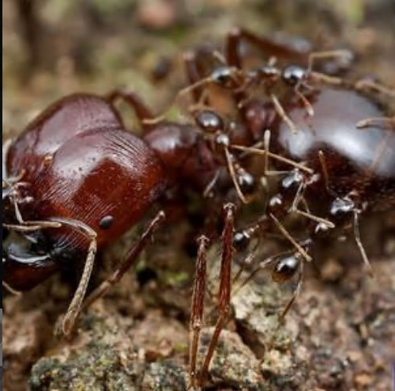
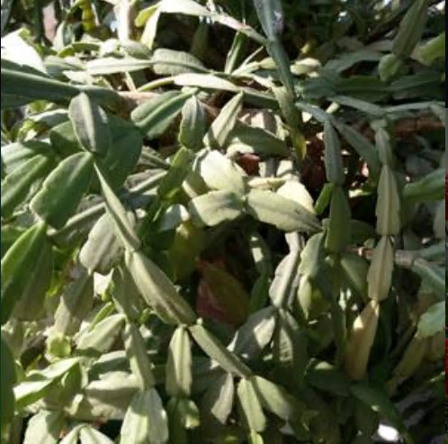

蚂蚁之美（提炼）
蚂蚁，在白垩纪晚期（约几亿年前）演化成功
红火蚁是入侵物种(孤独的人摘录)
收获蚁在遇到新生蚁后时，并不会拖回蚁巢，而是就地解决，
取食其腹部中的营养和鲜美的卵巢，这可能和收获蚁奇怪的习俗有关( 孤独的人摘录)
nima!!
liang342[admin]
>_< 正文
蚂蚁的分类学知识
蚂蚁属于昆虫纲膜翅目蚁科，是世界上种类最为丰富的社会性昆虫类群。截至目前，约有 13,500 种蚂蚁被描述和命名，它们被归类为 334 个属，分属于 17 个亚科 。瑞典植物学家卡尔・冯・林奈在 1758 年出版的第十版动植物物种目录中，就记载了 17 种蚂蚁。此后，随着生物学分类理论和实践的不断发展，对蚂蚁的分类研究也日益深入。例如，像行军蚁、陷阱颚蚁、龟蚁、切叶蚁和社会性寄生蚁等，都是具有独特形态和功能的分类或功能类群，体现了蚂蚁在形态和功能上的惊人多样性 。
蚂蚁的社会行为
分工协作：蚂蚁社会具有高度的分工特性。蚁后是整个蚁群的核心，主要职责是产卵繁殖后代，维持蚁群的数量增长。工蚁则承担着觅食、喂养幼蚁、照顾蚁后、建造和维护蚁巢、清理卫生等众多繁杂的工作。兵蚁拥有强大的上颚等武器，主要负责保卫蚁群，抵御外敌入侵。
亲缘选择与性比理论：亲缘选择理论认为，个体会通过帮助亲属来间接传递自己的基因，这在蚂蚁社会中表现为工蚁的自我牺牲行为，它们放弃自身繁殖机会，协助蚁后养育后代，因为与蚁后及其他姐妹工蚁之间存在较高的基因相似度。性比理论则解释了蚁群中不同性别的比例调控机制，这种调控对蚁群的稳定发展至关重要。例如，在某些情况下，蚁群会根据环境资源等因素，调整有性生殖个体（雄蚁和雌蚁）的产生比例，以确保种群的延续和发展。
合作与冲突：蚂蚁社会中既有合作也存在冲突。合作体现在各个成员为了蚁群的整体利益共同努力，如集体觅食、防御外敌等。然而，冲突也时有发生，比如在食物资源有限时，不同群体间的蚂蚁可能会为争夺资源而发生争斗；在同一蚁群内，也可能存在对繁殖权等方面的潜在冲突。但总体而言，蚁群通过复杂的社会机制，使得合作占据主导地位，以保障整个群体的生存和繁衍。
蚂蚁的生态作用
分解角色：蚂蚁在生态系统中参与物质循环和能量流动，部分蚂蚁以腐烂的有机物为食，通过挖掘和翻动土壤，促进有机物的分解和转化，加速土壤养分的释放，对维持土壤肥力和生态平衡具有重要意义。
捕食作用：许多蚂蚁具有捕食习性，它们会捕食各种昆虫、小型无脊椎动物等，对控制害虫种群数量起到积极作用。例如，Myopopone castanea 蚂蚁就是犀牛甲虫幼虫的捕食者，这为利用蚂蚁进行生物防治提供了可能 。
种子传播：有些蚂蚁会收集和搬运植物种子(收获蚁【Messor】），在这个过程中，部分种子可能会被带到适宜的环境中萌发，从而促进植物的扩散和分布，对植物群落的组成和结构产生影响。
蚂蚁的行为学特点
觅食行为：蚂蚁的觅食行为具有多样性。当遇到新的区域时，不同种类的蚂蚁表现出不同的搜索模式。例如，阿根廷蚂蚁（Linepithema humile）在探索新区域时，个体选择路径的模式与随机选择无显著差异，它们可能不会像其他一些蚂蚁那样通过留下标记来引导同伴，这使得它们在初始阶段能更广泛地分散在新环境中寻找食物，而不是聚集在一起。蚂蚁在觅食时，对食物质地和类型也有偏好，研究表明，蚂蚁在取食液体和固体食物时，表现出不同的行为模式，取食液体食物时会形成整齐的队列，而取食固体食物时则无明显队列。
信息交流：蚂蚁主要通过化学信号（信息素）进行信息交流。当一只蚂蚁发现食物源后，会在返回蚁巢的路上留下信息素，引导其他蚂蚁沿着该路径找到食物。此外，蚂蚁还可以通过触角接触、身体姿势、声音等方式传递信息，如在遇到危险时，蚂蚁会通过特定的信号告知同伴危险的存在和程度。
逃生行为：以日本弓背蚁为对象的研究发现，蚂蚁在火灾等危险环境下，会先对新环境进行探查，然后将信息传递给整个蚁群。不同浓度的烟气对蚂蚁的刺激作用不同，当烟气浓度达到一定程度，蚂蚁会迷失方向甚至死亡。而且蚂蚁倾向于选择最近的出口逃生，如果逃生通道被阻塞，它们会探测并选择其他路径，其逃生行为对人类的安全疏散研究具有一定的借鉴意义。
蚂蚁的生物学特性
发育过程：蚂蚁的发育属于完全变态发育，经历卵、幼虫、蛹和成虫四个阶段。以 Myopopone castanea 蚂蚁为例，其卵期约为 13.8 天，幼虫期有五个龄期，每个龄期时长不同，工蚁蛹期需 17.2 天，雌蚁蛹期为 17.9 天，从卵到成虫的存活率约为 56.4%
。身体结构：蚂蚁具有典型的昆虫身体结构，分为头、胸、腹三部分，有六条腿。头部有一对触角，用于感知环境、交流信息等；上颚发达，可用于咀嚼食物、搬运物品、战斗等。胸部是运动中心，腿部肌肉发达，赋予蚂蚁较强的运动能力。腹部则包含消化、生殖等重要器官
。不同亚科蚂蚁在形态和功能上的独特性具体有哪些差异
蚂蚁作为昆虫纲膜翅目蚁科的一员，种类繁多，不同亚科的蚂蚁在形态和功能上存在显著差异，这些差异使其能适应不同的生态环境和生活方式。以下将从形态特征和功能特性两方面详细阐述不同亚科蚂蚁的独特性差异。
形态差异
猛蚁亚科：猛蚁亚科的蚂蚁通常体型较大，工蚁体长一般在 5 - 25 毫米之间。它们的头部较大且宽阔，上颚发达，呈镰刀状，这一结构使其具备强大的咬合力，有利于捕捉和猎杀猎物。例如，一些猛蚁能凭借强壮的上颚制服比自身大的昆虫。猛蚁的触角一般为 12 节，膝状弯曲明显，这有助于它们精准地感知周围环境的化学信号和物理信息。此外，它们的胸部较为厚实，足长且有力，适合快速奔跑和追捕猎物。
切叶蚁亚科：切叶蚁亚科的蚂蚁体型多样，小至几毫米，大到十几毫米。其显著特征是头部形状多样，部分种类头部呈方形或矩形。上颚宽大，边缘具齿，适合切割叶片。例如，切叶蚁属的蚂蚁能将叶片切割成小块，搬运回巢。切叶蚁的触角一般为 10 - 12 节，同样为膝状。它们的身体表面通常有较密集的细毛，这些细毛有助于在搬运叶片等活动中保持物体的稳定性。
蚁亚科：蚁亚科蚂蚁体型大小不一。头部形状较为圆润，上颚形态多样，有的较为细长，有的则短而粗壮，以适应不同的取食和防御需求。触角一般为 12 节，膝状。胸部相对发达，足的长度适中，善于行走和攀爬。部分种类的蚁亚科蚂蚁腹部末端具有螫针，可用于防御和攻击，如弓背蚁属的一些种类。
臭蚁亚科：臭蚁亚科蚂蚁体型较小，一般在 2 - 6 毫米左右。它们的头部较小，呈椭圆形，上颚相对较弱。触角 12 节，膝状。臭蚁的最显著特征是腹部具有特殊的腺体，能分泌出具有强烈气味的物质，用于标记领地、防御天敌或传递信息。其胸部和足相对纤细，行动较为敏捷。
伪切叶蚁亚科：伪切叶蚁亚科蚂蚁体型中等，工蚁体长多在 4 - 10 毫米。头部呈三角形，上颚长而尖锐，呈锯齿状。触角 12 节，膝状。它们的胸部较为扁平，腹部第一节呈柄状，与其他亚科蚂蚁有所区别。此外，伪切叶蚁的身体颜色多为黑色或褐色，体表具有一定的光泽。
功能差异
猛蚁亚科：猛蚁亚科蚂蚁多为肉食性，其强大的上颚和敏捷的行动能力使其成为高效的猎手。它们以各种小型昆虫、节肢动物为食，在生态系统中处于中级消费者的位置。一些猛蚁会单独行动，凭借自身的力量捕食猎物；而有些则会群体协作，共同围攻较大的猎物。例如，在一些热带地区的森林中，猛蚁群体可以猎杀小型蜥蜴等脊椎动物。此外，猛蚁的巢穴通常较为简单，多建于地下或朽木中，主要功能是为了保护幼虫和储存食物。 切叶蚁亚科：切叶蚁亚科蚂蚁以独特的真菌养殖行为而闻名。它们切割植物叶片并非直接食用，而是将叶片带回巢穴，作为培养真菌的基质。工蚁负责切割叶片、搬运和照料真菌，而蚁后则专注于产卵。真菌为蚂蚁提供了主要的食物来源，这种共生关系使得切叶蚁能够在以植物为主要资源的环境中建立庞大的群落。切叶蚁的巢穴结构复杂，通常包括多个房间，分别用于培养真菌、养育幼虫和储存食物等。同时，切叶蚁在生态系统中对植物的分解和养分循环起到重要作用。
蚁亚科：蚁亚科蚂蚁的食性较为多样，包括植食性、杂食性和肉食性。一些种类以植物的花蜜、果实为食，另一些则会捕食小型昆虫或取食其他动物的尸体。例如，日本弓背蚁在野外既会采集花蜜，也会捕食蚜虫等小型昆虫。蚁亚科蚂蚁的社会分工明确，工蚁负责觅食、筑巢、照顾幼虫等工作，兵蚁则主要负责保卫巢穴。它们的巢穴形式多样，有的在地下挖掘复杂的通道和房间，有的则在树木的空洞或树枝上筑巢。
臭蚁亚科：臭蚁亚科蚂蚁主要以植物的汁液、花蜜以及小型昆虫为食。其分泌的气味物质不仅用于防御，还在觅食和交流中发挥重要作用。当发现食物源时，臭蚁会通过释放气味标记路线，引导同伴前来。在生态系统中，臭蚁对一些植物的传粉和种子传播有一定的促进作用。臭蚁的巢穴一般较为隐蔽，多建于腐烂的木材、树皮下或土壤中。
伪切叶蚁亚科：伪切叶蚁亚科蚂蚁的食性以甜食和小型昆虫为主。它们常在树干或树枝上活动，善于利用其尖锐的上颚捕食小型昆虫。伪切叶蚁在生态系统中与植物存在一定的关系，有些种类会与植物形成共生关系，保护植物免受其他害虫的侵害，同时从植物获得蜜露等食物资源。其巢穴通常位于树木的空洞、树皮下或土壤浅层，结构相对简单。
蚂蚁社会中合作与冲突的平衡机制是如何形成和维持的
蚂蚁社会展现出高度复杂的合作与冲突现象，其平衡机制的形成与维持是多种因素共同作用的结果，以下将从多个方面详细阐述：
生殖分工与限制
生殖分工：蚂蚁社会的{道德社会主义}[无政府主义]特征体现为蚁后和工蚁之间明确的生殖分工。
蚁后主要负责繁殖后代，而工蚁承担觅食、育幼、防御等多种任务。这种分工模式使得整个蚁群能够高效运作，每个成员都在自己擅长的领域发挥作用，为群体的生存和繁衍贡献力量。
生殖限制：研究发现，在蚂蚁的两个大亚科 Myrmicinae 和 Formicinae中，一些社会上先进的物种，工蚁的卵子发生过程存在异常。例如，瓦萨（Vasa）和纳米（nanos）这两个主要的母体决定因素，在工蚁卵母细胞中的定位受损，导致其后代出现严重胚胎缺陷，这被称为 “生殖限制”
生殖限制使得工蚁虽然保留了卵巢，但大大降低或消除了生产有生命力卵进行繁殖的能力，却保留了生产营养性营养蛋的能力。这种机制的形成可能是在殖民地一级选择的结果，通过减少或消除工蚁繁殖方面的潜在冲突，从而维持蚁群的和谐与效率。
相互管制机制
警务行为：在蚂蚁、蜜蜂和黄蜂等社会性昆虫中，当工蚁与后的儿子亲缘关系更近，或者工蚁生育成本降低其包容性时，工蚁生育的相互管制就会演变
以 Camponotus floridanus 蚁群为例，在大殖民地中，工蚁会破坏其他工蚁繁殖的卵，以此来监管工蚁繁殖。但在原始殖民地，工蚁却没有这种治安行为，而是容忍所有同种卵 。这种警务行为的变化与卵表面碳氢化合物的变化有关，蚁后产下的卵在大型殖民地中表面缺乏特征性碳氢化合物，使得其在化学上无法与工蚁产下的卵区分开，这为警务提供了信息基础。
对生育信息的反应：不同阶段殖民地的工蚁对生育信息的反应不同。早期殖民地的工蚁会袭击大殖民地的【外国皇后】，而大殖民地的工蚁则容忍这种【女王】，来自原始殖民地和大型殖民地的工蚁都会袭击来自原始殖民地的[外国皇后]
这表明社会调节机制，如对生育信号的响应，在殖民地的生命周期中发生了巨大变化，同时也强调了除关联性之外的因素在预测殖民地内部冲突程度方面的重要性。
行为策略与竞争合作关系
地理差异导致的行为策略：以沙漠地区的收获蚁 Messor pergandei 的年轻蚂蚁奠基人为研究对象，发现其社会行为存在种内地理差异 。
将不同类型的奠基蚁组成社会群体，如两个通常非社会性的奠基蚁、通常社会性的奠基蚁以及混合群体，比较它们的攻击性和对群体生产力投入资源的意愿。结果发现，非社会性奠基蚁可能因不适应社会生活，在群体生长中投入更多资源，但在混合群体中的存活率降低。而社会性奠基蚁在面对非社会性伙伴时，会展示出报复性攻击和食卵等新的竞争行为策略 。这说明蚂蚁社会行为的进化并非单纯促进合作，而是由旨在利用群体成员并降低被他人利用风险的竞争策略推动，在竞争与合作中寻求平衡。 女王之间的生殖竞争与合作：在多女王的蚂蚁社会中，如 Formica fusca，女王会根据巢穴内亲缘竞争机制的实验操作来调整自己的生殖努力 。
当面对繁殖力强且亲缘关系较远的竞争对手时，蚁后会增加产卵速度，而对于亲缘关系近的竞争对手，这种反应则不明显。这种机制有助于减少近亲之间的有害竞争，表明蚁后能够根据亲缘关系和其他蚁后的繁殖力，以精确且灵活的方式微调合作繁殖行为，维持群体内生殖方面的平衡。
种间关系的调节
种间社会控制：存在一种基于长期野外实验提出的种间关系模式，即种间社会控制 。
在这种关系中，优势物种的蚂蚁会主动且精确地调节受养物种的数量。其行为调节基于竞争与合作的平衡，合作源于互惠的盗食寄生关系。优势物种将受养物种的丰度维持在一定水平，既避免冲突和资源枯竭，又利用受养物种作为 “侦察兵” 提高自身狩猎效率，同时从受养物种繁殖的蚜虫处窃取蜜露。这种种间关系的调节机制有助于维持整个生态系统中蚂蚁不同物种间的平衡。
识别与监督机制
卵的区分：在社会多态蚁 Formica selysi 中，来自单蚁后和多蚁后殖民地的工蚁都能区分产卵工蚁与产卵后的工蚁，并消除前者所产的卵，这表明工蚁集体互相监督，以限制工蚁繁殖对殖民地造成的成本，而非因与蚁后和儿子的亲缘关系不同 。
然而，来自单一女王殖民地的工蚁能区分具有相同社会结构的外来蚁后产下的卵与同窝蚁后产下的卵，而来自多女王殖民地的工蚁则无法做出这种区分，可能是因为工蚁或卵上的线索更加多样化。这种识别与监督机制在一定程度上维持了蚁群内生殖的秩序与平衡。
蚂蚁的觅食行为多样性对其所在生态系统的物质循环和能量流动有何影响 蚂蚁作为陆地生态系统中分布广泛、数量众多的生物类群，其觅食行为的多样性对生态系统的物质循环和能量流动有着深远影响。以下将从多个方面阐述这种影响：
改变土壤物理化学性质，影响物质循环
蚂蚁筑巢与土壤结构改变：蚂蚁在觅食过程中，常通过挖掘、搬运等活动改变土壤结构。例如，干旱半干旱区的蚂蚁在筑巢和觅食时，会将深层土壤搬运至地表，形成蚁丘，这增加了土壤的通气性和透水性 。在森林生态系统中，红木工蚁（Formica rufa group）建造大型持久的蚁巢，其活动改变了土壤的孔隙度和团聚体结构，影响土壤中水分和空气的流通，进而影响物质在土壤中的传输和转化过程 。 土壤养分分布与循环：蚂蚁觅食会影响土壤养分分布。它们收集的食物残渣、排泄物以及死亡个体等，在蚁巢周围积累，形成养分富集区。如红木工蚁以蜜露和昆虫猎物为食，蜜露含有大量营养物质，被蚂蚁带入蚁巢后，部分养分在巢内分解，释放到周围土壤中，形成养分热点，影响土壤中氮、磷、钾等元素的循环 。 影响生物间相互作用，调控能量流动 与土壤生物的关系：蚂蚁觅食行为影响土壤微生物和其他土壤动物的分布。蚂蚁与土壤微生物存在复杂的相互作用，一些蚂蚁巢穴内的微生物群落丰富度较高，蚂蚁觅食带回的有机物质为微生物提供了营养来源，促进微生物生长繁殖，进而影响土壤中有机物的分解和养分转化过程，影响物质循环。同时，蚂蚁的觅食活动会改变土壤动物的栖息环境，影响其分布和数量，如某些蚂蚁可能捕食小型土壤动物，或者与其他土壤动物竞争食物资源，间接影响生态系统的能量流动 。 与植物的关系：蚂蚁的觅食偏好影响植物种子传播和植物群落结构。部分蚂蚁以植物种子为食或搬运种子，这一过程实现了种子的扩散，影响植物种群分布。例如，一些蚂蚁会将植物种子搬运到蚁巢，部分种子在适宜条件下萌发，促进植物种群的更新和扩散。此外，蚂蚁与植物的共生关系也影响能量流动，如一些植物为蚂蚁提供蜜露等食物资源，蚂蚁则保护植物免受食草动物侵害，这种互利共生关系影响生态系统中能量在植物、蚂蚁和其他生物之间的分配 。 调节食物网结构，影响物质与能量传递 作为捕食者：不同种类蚂蚁具有不同食性，肉食性蚂蚁在觅食过程中捕食其他昆虫和小型无脊椎动物，通过控制被捕食者种群数量，调节生态系统中生物群落结构。例如，猛蚁亚科的一些蚂蚁捕食多种害虫，影响害虫种群动态，改变生态系统中能量在不同营养级之间的流动方向和强度，避免能量过度集中在某些害虫种群，使能量更合理地在食物网中传递 。 作为被捕食者：蚂蚁本身也是许多生物的食物来源，其丰富的数量为其他捕食者提供了稳定的能量来源。如鸟类、蜥蜴等捕食者以蚂蚁为食，蚂蚁的觅食行为决定其在生态系统中的分布和活动范围，进而影响捕食者的觅食效率和能量获取，在生态系统能量流动中起到连接不同营养级的作用。 影响其他生物觅食行为：蚂蚁的觅食行为会影响其他生物的觅食策略和资源利用。例如，不同种类蚂蚁因食性差异和种间竞争产生觅食节律分化，这种分化可能导致其他生物调整自身觅食时间和地点，从而影响整个生态系统中生物对资源的利用效率和能量流动路径 。 促进生态系统服务功能，维持物质与能量平衡 提高土壤肥力：蚂蚁通过觅食活动对土壤结构和养分的影响，最终有助于提高土壤肥力，促进植物生长。在农业生态系统中，蚂蚁的这些作用可减少化肥使用，维持生态系统的物质循环和能量平衡，保障农业生产的可持续性。 保护生物多样性：蚂蚁觅食行为多样性维持了生态系统生物多样性，而丰富的生物多样性是生态系统物质循环和能量流动稳定进行的基础。例如，不同蚂蚁种类对不同食物资源的利用，使得生态系统中的资源得到更充分利用，避免因单一物种过度利用资源导致生态系统失衡，保障物质循环和能量流动的顺畅进行。
成员
-

全异君
一只自由自在的全异君
-

随龙
-
断大师
-
孤独的人
玩电脑高能的大蛇，
传说中的Class706 snake - 打不动了，欢迎纠错